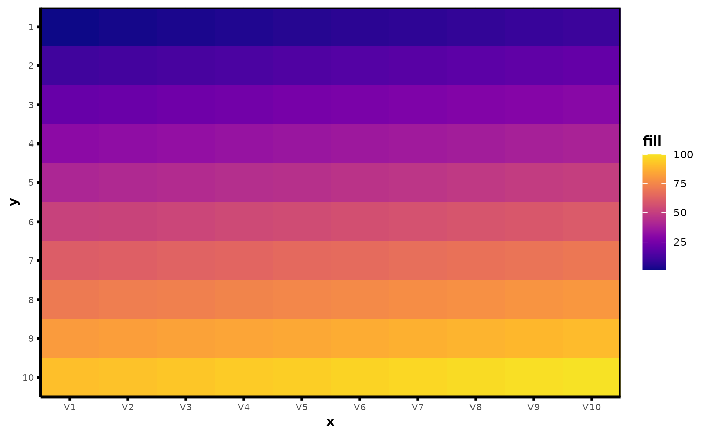
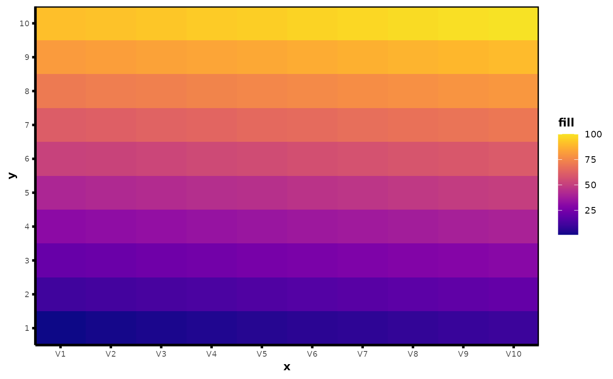
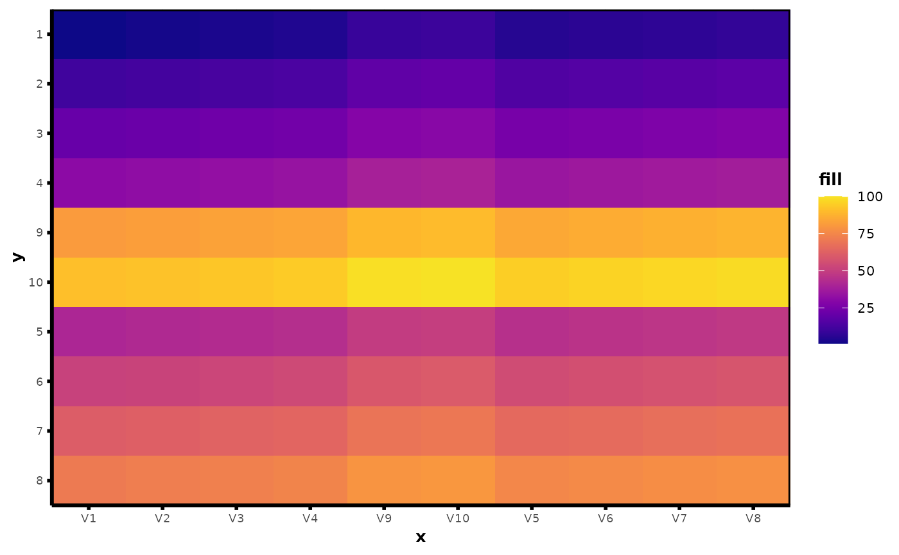
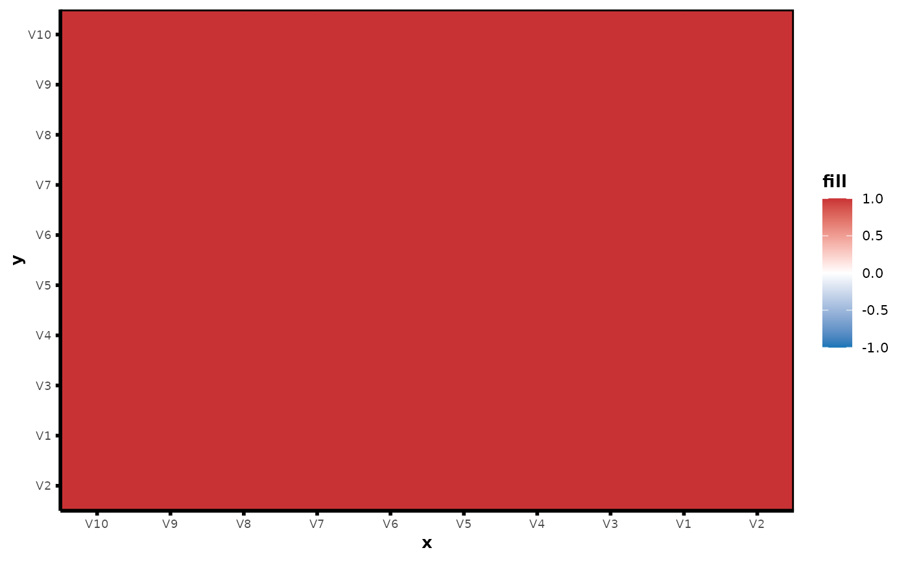

(Clustered) Heatmap wrappers for ggplot2.
plot_heatmap.Rdplot_heatmap generates nice heatmaps of a data matrix (or
frame) with ease. plot_hclust_heatmap provides additional functionality
beyond plot_heatmap that allows for clustering the rows and columns of the
heatmap via hierarchical clustering. plot_cor_heatmap generates nice
(clustered) heatmaps for the feature correlation matrix of X. These heatmap
functions also allow for row/column groups in the plotting display, colored
axis text labels, and customization of the color/theme.
Usage
plot_heatmap(
X,
y_groups = NULL,
x_groups = NULL,
ytext_labels = rownames(X),
xtext_labels = colnames(X),
ytext_num = FALSE,
xtext_num = FALSE,
ytext_colors = NULL,
xtext_colors = NULL,
show_ytext = TRUE,
show_xtext = TRUE,
center = FALSE,
scale = FALSE,
z_range = NULL,
text_size = 0,
y_orient = "identity",
size = 0,
color_by_quantile = FALSE,
n_quantiles = 5,
color_scheme = "viridis",
viridis_option = "C",
...
)
plot_hclust_heatmap(
X,
y_groups = NULL,
x_groups = NULL,
ytext_labels = rownames(X),
xtext_labels = colnames(X),
ytext_num = FALSE,
xtext_num = FALSE,
ytext_colors = NULL,
xtext_colors = NULL,
show_ytext = TRUE,
show_xtext = TRUE,
clust_x = TRUE,
clust_y = TRUE,
clust_x_wi_group = TRUE,
clust_y_wi_group = TRUE,
dist_metric_x = "euclidean",
dist_metric_y = "euclidean",
dist_matrix_x = NULL,
dist_matrix_y = NULL,
linkage_x = "ward.D",
linkage_y = "ward.D",
center = FALSE,
scale = FALSE,
z_range = NULL,
text_size = 0,
size = 0,
color_by_quantile = FALSE,
n_quantiles = 5,
color_scheme = "viridis",
viridis_option = "C",
...
)
plot_cor_heatmap(
X,
cor_type = "pearson",
absolute_value = FALSE,
xytext_labels = colnames(X),
xytext_colors = NULL,
show_ytext = TRUE,
show_xtext = TRUE,
clust = TRUE,
linkage = "ward.D",
z_range = c(-1, 1),
text_size = 0,
color_by_quantile = FALSE,
n_quantiles = 5,
color_scheme = "cor_temperature",
viridis_option = "C",
...
)Arguments
- X
Data matrix or data frame to use for heatmap.
- y_groups
Data vector of group ids to use for grouping rows in heatmap.
- x_groups
Data vector of group ids to use for grouping columns in heatmap.
- ytext_labels
y-axis labels in heatmap.
- xtext_labels
x-axis labels in heatmap.
- ytext_num
Logical; whether or not y labels are numeric/continuous.
- xtext_num
Logical; whether or not x labels are numeric/continuous.
- ytext_colors
(Optional) Data vector to use for coloring y-axis text.
- xtext_colors
(Optional) Data vector to use for coloring x-axis text.
- show_ytext
Logical; whether or not to show y-axis text labels.
- show_xtext
Logical; whether or not to show x-axis text labels.
- center
Logical; whether or not to center columns of
X.- scale
Logical; whether or not to scale columns of
X.- z_range
Vector of length 2 with the min and max of the fill color range for heatmap. Used to set bounds for fill legend.
- text_size
Numeric; size of text on heatmap. If
text_size= 0 (default), no text is shown.- y_orient
One of "identity" or "ordered". If "identity", plots heatmap of
Xas if it is an image. If "ordered", plots first row ofXat the bottom of the heatmap and the last row ofXon top.- size
Size argument in
ggplot2::geom_tile()to avoid white lines in continuous heatmap.- color_by_quantile
Logical; whether or not to use quantiles to construct fill color scale. Default is
FALSE.- n_quantiles
Number of quantiles for color scheme. Used only if
color_by_quantile = TRUE.- color_scheme
One of "viridis", "temperature", "cor_temperature", or a data vector of colors to use for the fill color scale.
- viridis_option
Argument indicating viridis palette name. Only used if
color_scheme = "viridis".- ...
Other arguments to pass to
ggplot2::theme().- clust_x
Logical; whether or not to cluster columns.
- clust_y
Logical; whether or not to cluster rows.
- clust_x_wi_group
Logical; whether or not cluster within x_groups.
- clust_y_wi_group
Logical; whether or not cluster within y_groups.
- dist_metric_x
Distance metric for clustering columns (see
stats::dist()).- dist_metric_y
Distance metric for clustering rows (see
stats::dist()).- dist_matrix_x
Distance matrix for clustering columns (optional). Must provide either
dist_metricordist_matifclust_x = T.- dist_matrix_y
Distance matrix for clustering rows (optional). Must provide either
dist_metricordist_matifclust_y = T.- linkage_x
Type of linkage for clustering columns (see
stats::hclust()).- linkage_y
Type of linkage for clustering rows (see
stats::hclust()).- cor_type
Type of correlation. Must be one of "pearson", "kendall", or "spearman"
- absolute_value
Logical indicating whether or not to show absolute value of the correlation values in the correlation heatmap.
- xytext_labels
x- and y-axis labels for correlation heatmap.
- xytext_colors
(Optional) Data vector to use for coloring x- and y-axis text labels in correlation heatmap.
- clust
Logical; whether or not to cluster columns and rows in correlation heatmap
- linkage
Type of linkage for clustering rows and columns in correlation heatmap (see
stats::hclust()).
Examples
df <- as.data.frame(matrix(1:100, nrow = 10, byrow = 10))
plot_heatmap(df, y_orient = "identity")

plot_heatmap(df, y_orient = "ordered")

plot_hclust_heatmap(df)

plot_cor_heatmap(df)
